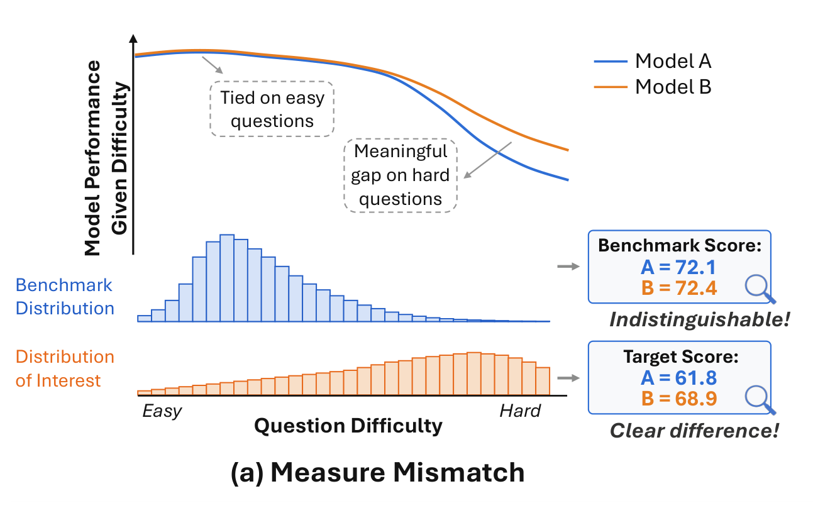
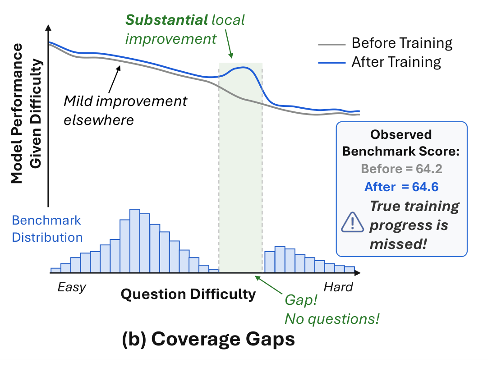

Benchmark evaluation looks simple: run models on a set of questions and average the results. But the conclusion depends not only on how well models perform, but also on how the benchmark's questions are distributed. Does a benchmark faithfully measure the model differences and training improvements we actually care about?


Two benchmark failure cases. In both panels, the curves show true model conditional performance as a function of question difficulty. (a) Measure Mismatch. The benchmark emphasizes easy questions, where the models perform similarly, while the difficulty distribution we care about places more weight on harder questions, where they differ substantially. Because the benchmark and the target distribution weight the difficulty axis differently, they lead to different conclusions for the same two models. (b) Coverage Gaps. A model actually improves substantially over a localized difficulty region. Because the benchmark has no questions in that region, this improvement is not reflected in the observed benchmark score, causing meaningful training progress to be missed. (Paper, Figure 1)
We organize benchmark questions along a difficulty axis and treat the benchmark itself as a distribution: each question contributes equal evaluation mass at its difficulty level, so a benchmark is an empirical measure over difficulty. This turns the two failure cases above into precise, analyzable problems about the benchmark-induced measure:
Measure mismatch
The benchmark distributes its mass differently from the target difficulty distribution that represents the intended evaluation objective, so benchmark conclusions can differ from conclusions under the target, and in severe cases flip a ranking.
Coverage gaps
A benchmark is supported on finitely many difficulty points, so whole intervals of difficulty may contain no items. A substantial gain concentrated in such an interval can leave the benchmark score almost unchanged.
TL;DR
Benchmarks are measures. Averaging a model's results over \(n\) items is exactly integrating its difficulty-conditioned performance against the empirical measure \(\nu_B=\frac1n\sum_i \delta_{z_i}\).
Measure mismatch can distort model comparisons. We quantify it by the 1-Wasserstein distance between the benchmark measure and a target distribution, the Difficulty Distribution Mismatch (DDM), which bounds the score distortion (for Lipschitz performance differences) and gives a condition under which no rank flip can occur.
Coverage gaps can hide localized improvements. The Maximum Gap between adjacent difficulties is an exact asymptotic minimax detection boundary: in the worst case, an improvement confined to an interval no wider than it is undetectable, however many times the benchmark is re-run. Across 25 benchmarks in 7 domains, 10 have DDM ≥ 0.10, 8 have Max Gap ≥ 0.10, and 10 have Top-5 Gap Sum ≥ 0.30.
BenchFill fills the gaps. Difficulty-targeted LLM rewriting with online IRT calibration. Inserting only three items per benchmark reduces the sum of the three largest gaps by 32.67% on average, versus 17.52% for a budget-matched baseline and 35.06% for an idealized oracle reference.
A measure-based view of benchmarks
Difficulty
Each item \(x_i\) has a difficulty \(z_i\in[0,1]\); larger is harder.
Performance curve
\(s_\theta(z)\in[0,1]\) is model \(\theta\)'s expected performance on items of difficulty \(z\), e.g., pass@1.
Benchmark measure
A benchmark \(B=\{x_i\}_{i=1}^n\) induces \[\nu_B=\frac1n\sum_{i=1}^n\delta_{z_i}.\]
Score as an integral
The benchmark score is exactly an integral against \(\nu_B\): \[S_B(\theta)=\frac1n\sum_{i=1}^n s_\theta(z_i)=\int s_\theta(z)\,d\nu_B(z).\]
Schematic The score averages the curve's height at the item difficulties (stems). Items are point masses of weight \(1/n\), and the interval between two adjacent items gets no weight.
For two models \(\theta,\theta'\) with difficulty-conditioned difference \(\Delta(z)=s_{\theta'}(z)-s_\theta(z)\), the benchmark reports \(D_B=\int\Delta\,d\nu_B\). A leaderboard comparison therefore couples two distinct objects: the models' difference \(\Delta\) and the benchmark's allocation of mass \(\nu_B\). Under a target distribution \(\mu\in\mathcal P([0,1])\) that encodes the intended evaluation objective, the quantity we actually want is \(D_\mu=\int\Delta\,d\mu\).
How much mass must be moved, and how far, to turn the benchmark's difficulty distribution into the target one. Here \(\Pi(\nu_B,\mu)\) is the set of couplings of \(\nu_B\) and \(\mu\).
As computed in the paper. With item difficulties min-max normalized to \([0,1]\) and no prior information, DDM is measured against a same-size empirical uniform reference with points at the equal-width bin midpoints \((i-\tfrac12)/n\). In one dimension this is the \(L_1\) distance between the two ECDFs: \(\mathrm{DDM}=\frac1n\sum_{i=1}^n\bigl|z_{(i)}-\tfrac{i-1/2}{n}\bigr|\).
The length of the largest interval on the difficulty axis that contains no benchmark item, where \(z_{(1)}\le\dots\le z_{(n)}\) are the sorted difficulties and the boundary intervals at 0 and 1 are included.
Also reported. The Top-5 Gap Sum, the sum of the five largest such gaps, shows whether coverage problems extend beyond a single interval.
What the theory guarantees
Theorem 2.1 Mismatch controls score distortion and rank stability
If the performance difference \(\Delta\) is \(L\)-Lipschitz, then \(\bigl|D_B(\theta',\theta)-D_\mu(\theta',\theta)\bigr|\le L\,W_1(\nu_B,\mu)\). Consequently, if \(|D_\mu(\theta',\theta)|>L\,W_1(\nu_B,\mu)\), then \(\operatorname{sign}D_B=\operatorname{sign}D_\mu\): the benchmark ordering agrees with the target ordering and no rank flip can occur.
A small DDM means the benchmark faithfully approximates the target evaluation; a large one means it may over- or under-weight difficulty regions. The paper (App. B.1) also extends this to the finite-sample setting.
Theorem 2.2 Uniform target as the unique maximin choice
Suppose nothing is known about where along the difficulty axis two models differ: \(\Delta\) ranges over \(\mathcal F_\rho=\{\Delta:[0,1]\to[-1,1]\ \text{measurable}:\int_0^1\Delta(z)\,dz=\rho\}\), \(\rho\in(-1,1)\). Then the worst-case retained difference \(V_\rho(\mu):=\inf_{\Delta\in\mathcal F_\rho}\int\Delta\,d\mu\) satisfies \(\sup_{\mu}V_\rho(\mu)=\rho\), with the uniform distribution \(\lambda=\mathrm{Unif}[0,1]\) as the unique maximizer.
This does not claim that the uniform distribution is universally optimal. When prior information about the intended evaluation objective is available, \(\mu\) should reflect it. Uniform is a principled, neutral default for the agnostic setting, one that privileges no difficulty region a priori.
Theorem 2.3 Maximum gap as an exact asymptotic minimax detection boundary
Fix a test level \(\alpha\in(0,1)\) and \(a\in(0,1]\). Test \(H_0: s_-=s_+\) against \(H_1\): there is an interval \(I\subset[0,1]\) with \(|I|=w\) on which \(s_+(z)-s_-(z)\ge a\), using level-\(\alpha\) tests based on \(k\) repeated samples per benchmark item. Let \(\Pi^*_\alpha(B;w,a,k)\) be the minimax worst-case power.
If \(w\le G(B)\), then \(\Pi^*_\alpha(B;w,a,k)=\alpha\) for every \(k\in\mathbb N\).
If \(w>G(B)\), then \(\lim_{k\to\infty}\Pi^*_\alpha(B;w,a,k)=1\).
This is a sharp detectability phase transition. An improvement no wider than the maximum gap can be completely invisible to the benchmark in the worst case, regardless of how many repeated evaluations are run. Once it is wider, repeated evaluation eventually makes it detectable.
Diagnosing 25 popular benchmarks
We analyze 25 widely used benchmarks spanning math, coding, agentic tasks, science, instruction following, logic, and medicine. Item difficulty is relative to model ability, so rather than using raw failure rates we estimate it with Item Response Theory (IRT). In the one-parameter logistic (1PL) model, model \(j\) solves item \(i\) with probability \(\Pr(Y_{ij}=1)=\sigma(\theta_j-b_i)\), where \(\theta_j\) is the model's ability and \(b_i\) the item's difficulty. Multiple-choice benchmarks add a chance-level guessing parameter.
Overview of our benchmark difficulty estimation and metric calculation pipeline. We collect empirical success rates from multiple LLMs on benchmark items, diagnose the response matrix, fit a 1PL IRT model to estimate item difficulties, perform post-fit IRT diagnostics, and compute two metrics over the normalized difficulty distribution. (Paper, Figure 2)
Model panel. For non-agentic benchmarks, 12 LLMs from 1.7B to 397B parameters, stratified across the Text Arena leaderboard, each with up to 32 rollouts per item. Agentic benchmarks use HAL results for 15–66 frontier closed-source LLMs.
Fitting and diagnostics. Bayesian inference via MCMC. All benchmarks pass all 7 checks: 4 on the response matrix before fitting, plus \(\hat R\), effective sample size, and divergent transitions after fitting. A leave-one-out analysis supports the stability of the 12-model panel.
Metrics. Difficulties are normalized to \([0,1]\). DDM uses the same-size uniform reference described above, and gap metrics include the endpoint gaps.
25
benchmarks across 7 domains
10/25
have DDM ≥ 0.10
8/25
have Max Gap ≥ 0.10
10/25
have Top-5 Gap Sum ≥ 0.30
Interactive difficulty distribution explorer
Pick a benchmark to see the ECDF of its normalized item difficulties against the same-size uniform reference. The area between the two curves equals DDM, and the green bands mark the five largest adjacent gaps.
Table 1: Summary of proposed metrics across benchmarks. DDM denotes the 1-Wasserstein distance between the benchmark empirical difficulty distribution and a same-size empirical uniform distribution on [0, 1]. Max Gap is the largest gap between consecutive normalized difficulties, and Top-5 Sum is the sum of the five largest such gaps. # denotes the number of benchmark items. Lower is better for all three metrics. Highlighted entries mark comparatively large values for each metric: DDM ≥ 0.10, Max Gap ≥ 0.10, or Top-5 Sum ≥ 0.30. (Click a row to open it in the explorer.)
Benchmark
Domain
DDM
Max Gap
Top-5 Sum
#
Several benchmarks deviate strongly from the neutral uniform target. Their aggregate scores are more sensitive to over-represented difficulty regions and less sensitive to under-represented ones. Non-uniformity is not inherently a problem when it matches the intended evaluation objective. But when no such objective is specified, high-DDM leaderboard results reflect the benchmark's own difficulty weighting rather than a difficulty-neutral comparison, so users should check whether that weighting matches their use case.
Many benchmarks have large local coverage gaps. A training run may make meaningful progress inside an uncovered region while the aggregate score barely moves. AIME24 and AIME25, for example, have Top-5 Gap Sums close to 0.5 despite their widespread use for monitoring RLVR training. And this is not only a small-benchmark artifact: HumanEval (164 items) and BBH-5 objects (250 items) also show substantial gap metrics.
How reliable are these estimates?
Recomputing the metrics on each posterior draw of the IRT difficulties (paper App. C.6) shows that DDM is stable: its posterior standard deviation is typically about 0.011 (range 0.006–0.020), roughly 8–12% of the point estimate in typical cases. Max Gap is an extreme-order statistic and carries more uncertainty (posterior SD 0.017–0.041), but the qualitative conclusion holds. Across benchmarks, the posterior probability that the observed Max Gap exceeds a same-size uniform-sampling baseline has median 0.999, with a median observed-to-baseline ratio of 3.85×. The paper also compares 1PL against 2PL and multidimensional IRT models (App. C.5).
BenchFill: difficulty-targeted gap filling
Diagnosis suggests an action: put new items where the benchmark has none. Given an adjacent gap \([z_L,z_R]\) between two benchmark items, the goal is a valid new item whose difficulty is as close as possible to the midpoint \(z^\star=(z_L+z_R)/2\), the location that most reduces the gap with a single insertion. The new item is added to the benchmark and replaces nothing. Rather than asking experts to write items at a target difficulty, BenchFill uses an LLM to rewrite existing items. Existing items serve as local difficulty references and keep the benchmark's format and style.
Overview of BenchFill. BenchFill iteratively rewrites parent items into child variants, annotates their difficulties, and updates the memory to guide the next round of gap filling. (Paper, Figure 4)
Target
Select a large uncovered interval and set the target \(z^\star\) to its midpoint. Memory \(\mathcal M\) starts with the existing items closest to the gap.
Retrieve
Take the parents in \(\mathcal M\) whose annotated difficulties are closest to \(z^\star\), plus a reference list of nearby item–difficulty pairs below and above the target.
Rewrite
The rewriter LLM turns each parent into a batch of children, conditioned on the parent, the target, and the references, while preserving the benchmark's format.
Validate
A validity judge checks that each child's reference answer is correct. Invalid children are discarded.
Calibrate
Evaluate the fixed model panel on each valid child and place it on the original IRT scale with online calibration (below).
Update
Add the annotated children to \(\mathcal M\). Children closer to \(z^\star\) are more likely to become the next round's parents and references.
Select
After at most \(T\) rounds, or once within tolerance, choose the valid child minimizing \(|\hat z-z^\star|\). Human experts review it before insertion.
Online IRT calibration. With abilities \(\hat\theta_j\) pre-estimated on the original benchmark, model \(j\) answers a rewritten item \(x\) correctly \(c_j\) times out of \(K_j\) trials. Only the new item's parameter is fit:
This places each rewritten item on the same scale as the original benchmark without refitting the full model. Multiple-choice benchmarks keep the original guessing parameter.
Before and after: filling the three largest gaps
The strip shows one benchmark's items (ticks) on the normalized difficulty axis. Switch to After to insert the three items that BenchFill actually selected: each lands near the midpoint (★) of a previously empty interval and splits it in two.
Original itemsTop-3 gaps★Target midpointBenchFill item
Shown for the five benchmarks whose item-level difficulty estimates match the paper's Table 1 (AIME24, AIME25, AIME26, Gaokao2023en, IFEval); results for all eight benchmarks are in Table 2 below. The before/after Top-3 Gap Sum reduction equals the BenchFill column of Table 2. Difficulties are IRT estimates on the normalized [0,1] scale, not ground truth.
Results
We fill gaps in 8 representative benchmarks from different domains, targeting the three most pronounced gaps in each and inserting one item per gap. The rewriter is MiniMax-M2.7 (temperature 1.0). The search runs for at most 8 rounds, each with 4 parents × 4 children and a reference list of at most 16 nearby item–difficulty pairs, and stops early once an item is within 0.01 of the target. The baseline is a budget-matched best-of-N rewriter with uniformly sampled parents: it has the same rewrite budget and the same final selection rule, but no difficulty-aware retrieval, reference lists, or memory.
Top-3 Gap Sum Reduction (%) from Table 2 (higher is better). The oracle is not a gap-filling method: it inserts an item exactly at each target difficulty, giving a reference upper bound for three insertions.Table 2: Per-benchmark gap-filling results
Table 2: Gap-filling results. Top-3 Gap Sum Reduction reports the relative reduction (%) from the original benchmark, where larger is better. Target Dev. is the mean absolute deviation between the selected item difficulty and the target difficulty over three filled gaps, where lower is better. Baseline uses a budget-matched best-of-N uniform-parent rewriting strategy. Oracle is an idealized upper bound that inserts an item exactly at each target difficulty, rather than an actual gap-filling method.
Benchmark
Top-3 Gap Sum Reduction (%) ↑
Target Dev. ↓
Baseline
BenchFill
Oracle
Baseline
BenchFill
Takeaway. With only three inserted items per benchmark, BenchFill reduces the Top-3 Gap Sum by 21.09%–38.88%, nearly double the budget-matched baseline on average, and close to the oracle reference. On AIME24, AIME25, and AIME26 it matches the oracle's reduction. Its Target Dev. stays below 0.01 on every benchmark, so the rewrite-and-annotate search produces items close to the intended difficulty. All 24 selected items passed the automated validity check (GPT-5.4) and then human expert review without modification or replacement.
Does filling gaps help detect localized improvements?
Reducing a gap metric is only useful if it makes the benchmark more sensitive. For one target gap in each of AIME24, AIME25, and AIME26, we apply mild SFT so that a model improves around that gap region. We then compare three variants that differ by a single item: Original (30 items), Original + BenchFill, and Original + Baseline. Each item is evaluated with 32 rollouts before and after SFT, and a one-sided stratified randomization test (100,000 permutations) checks whether the gain is detectable at \(p<0.05\).
0/3
Original benchmark
0/3
Original + Baseline item
3/3
Original + BenchFill item
Table 12: Localized-improvement detection results. Each augmentation method adds one item to the original 30-item benchmark. Gain denotes the change in average accuracy. The one-sided stratified randomization test randomly reassigns rollout outcomes between the pre- and post-SFT conditions within each item using 100,000 permutations. Boldface indicates variants for which a positive gain is detected at p < 0.05.
Case
Benchmark variant
Gain
One-sided p
Detected
The scope is three targeted cases, one gap in each of AIME24/25/26 and one model per case. In these cases, the improvement that the original and baseline-augmented benchmarks missed becomes detectable once BenchFill places an item in the improved region.
Representative generated items
Each pair shows an original benchmark item (the ancestor) and the final item BenchFill selected from its lineage, with the main change highlighted. Difficulties are normalized to [0,1], and the target is in parentheses. Rewrites can move difficulty in either direction.
AMC230.535 → 0.597
Original ancestor 0.535
For how many integers \(n\) does the expression \(\displaystyle\sqrt{\frac{\log(n^2)-(\log n)^2}{\log n-\htmlClass{hl}{3}}}\) represent a real number, where \(\log\) denotes the base-10 logarithm?
BenchFill item 0.597 (0.598)
Find the number of integer values of \(n\) such that \(\displaystyle\sqrt{\frac{\log(n^2)-(\log n)^2}{\log n-\htmlClass{hl}{1}}}\) represents a real number, where \(\log\) denotes the base-10 logarithm.
Gaokao2023en0.864 → 0.886
Original ancestor 0.864
On an \(8\times8\) chessboard, 6 black rooks and \(k\) white rooks are placed on different cells so that each rook only attacks rooks of the opposite color. Compute the maximum possible value of \(k\). (Two rooks attack each other if they are in the same row or column and no rooks are between them.)
BenchFill item 0.886 (0.885)
On a \(9\times9\) chessboard, 7 black rooks and \(k\) white rooks are placed on distinct squares so that each rook attacks only rooks of the opposite color. What is the maximum possible value of \(k\)? (Two rooks attack each other if they are in the same row or column and there is no rook between them.)
AIME250.750 → 0.674
Original ancestor 0.750
Alex divides a disk into four quadrants with two perpendicular diameters intersecting at the center of the disk. He draws 25 more line segments through the disk, each connecting two points at random on the perimeter in different quadrants. Find the expected number of regions into which these 27 line segments divide the disk.
BenchFill item 0.674 (0.671)
A circle has a diameter drawn, splitting it into two semicircular regions. Then 8 chords are drawn, each connecting a random point on the boundary in one semicircle to a random point on the boundary in the other semicircle. Assuming all points are chosen uniformly and independently, what is the expected number of regions into which the interior of the circle is divided?
Item text as shown in the paper's Table 13. All 24 gap-filling items, with answers, parents, targets, and annotated difficulties, will be released with the code.
Additional findings
Does the rewriter perceive difficulty?
Before any feedback, in the first generation round, higher specified targets already produce higher mean annotated difficulty within most benchmarks. The search-and-annotate loop then further reduces the target deviation over rounds, and in most cases the children concentrate around the target.
First-round alignment of specified target difficulty and annotated difficulty. Each panel corresponds to one benchmark. The horizontal axis shows the specified target difficulty, and the vertical axis shows the annotated difficulty of valid first-round children. Blue points denote individual generated children, and red markers denote the mean and standard deviation for each target difficulty. The dashed diagonal indicates perfect alignment. For readability, both axes are shown on a 0–10 scale, corresponding to normalized difficulties in [0, 1] multiplied by 10. Within most benchmarks, higher specified targets produce higher annotated difficulties already in the first round, before any iterative feedback is incorporated. (Paper, Figure 6)
Multi-round target alignment during BenchFill search. Each panel shows one representative gap-filling case from a different benchmark. The horizontal axis denotes the generation round, and the vertical axis denotes the absolute target deviation, \(|\hat z-z^\star|\), for generated children. Blue points denote individual generated children, and red markers denote the round-level mean and standard deviation. Across most cases, the mean target deviation decreases over rounds, and the generated children become more concentrated around the target, showing that the search-and-annotate loop further improves target alignment beyond the rewriter’s initial difficulty sensitivity. (Paper, Figure 7)
Benchmark calibration by quantile-matching pruning
The measure-mismatch view also suggests re-weighting a benchmark toward a chosen target. A simple greedy algorithm (paper App. D) keeps \(k\) items by matching target quantiles \(q_t=Q_\mu\bigl((t-\tfrac12)/k\bigr)\) to the closest unused item. On 8 math benchmarks, we calibrate each one toward the uniform target and measure how well its model ranking agrees with a leave-one-out reference ranking aggregated from the other seven.
Spearman ↑
0.890 →0.930
Kendall ↑
0.802 →0.848
\(W_1(\nu,\mathrm{Unif})\) ↓
0.096 →0.028
Averages over the 8 benchmarks, full benchmark → calibrated subset. Random pruning to the same size (30 trials) gives 0.895 Spearman, 0.801 Kendall, and 0.109 \(W_1\), so the gain does not come from simply using fewer items. Uniform calibration is used here as a neutral debiasing strategy; it does not assume the reference distribution is exactly uniform.
Table 11: Per-benchmark calibration results
Table 11: Benchmark calibration results on eight math benchmarks. For each source benchmark, Full denotes the original benchmark, Random denotes the average over 30 random pruned subsets of the same size, and Cal. denotes the calibrated subset produced by our quantile-matching benchmark calibration algorithm. Spearman and Kendall measure agreement with the leave-one-out reference ranking. We report \(W_1(\nu,\mathrm{Unif})\) as a mechanism metric to verify that calibration moves the selected benchmark measure closer to the neutral uniform distribution. Bold values indicate the best result among Full, Random, and Cal. for each benchmark and metric.
Benchmark
Spearman ↑
Kendall ↑
\(W_1(\nu,\mathrm{Unif})\) ↓
Full
Random
Cal.
Full
Random
Cal.
Full
Random
Cal.
Limitations and outlook
The framework is primarily post hoc: given an existing benchmark, we estimate its difficulty distribution, diagnose mismatch and coverage gaps, and reduce pronounced gaps by targeted insertion. A natural next step is difficulty-aware benchmark construction, which would design the induced difficulty measure from the start to match the intended evaluation objective while keeping high local resolution along the difficulty axis.
BibTeX
@misc{sun2026benchmark,
title = {Your Benchmark Is an Empirical Measure Over Difficulty},
author = {Sun, Yifan and Yu, Naicheng and Gong, Jiawen and Shen, Jingyan and Zhang, Huan},
year = {2026},
note = {Preprint}
}
Preprint citation. It will be updated with arXiv metadata once available.
![Figure 1. Left, measure mismatch: Models A and B are tied on easy questions but separate on hard ones. The benchmark distribution concentrates on easy questions, so benchmark scores are 72.1 versus 72.4 (indistinguishable), whereas a distribution of interest weighted toward harder questions gives target scores 61.8 versus 68.9 (a clear difference). Right, coverage gaps: after training, a model improves substantially in a local difficulty region that contains no benchmark questions, so the observed benchmark score only moves from 64.2 to 64.6 and the true training progress is missed.](./static/images/fig1_teaser.png)
![Figure 2. Pipeline in four panels: (1) collect a response matrix of empirical success rates of N LLMs on M items with k rollouts per item; (2) diagnose the response matrix with model and item information and inversion rates; (3) fit a 1PL IRT model P(Y_ij = 1) = sigma(theta_j - b_i) and check R-hat, minimum bulk ESS, divergent transitions, and leave-one-out stability; (4) compute the Wasserstein distance between the benchmark and uniform ECDFs and the maximum gap between sorted normalized difficulties.](./static/images/fig2_pipeline.png)
![Figure 4. BenchFill overview. 1. Rewrite: an LLM rewrites each parent item, a dice-product counting problem, into several child variants. 2. Annotate: each child goes through (a) a validity check, (b) response collection, and (c) online calibration to obtain an item difficulty. 3. Update memory: annotated items are added to a memory along the difficulty axis; the parents closest to the target difficulty inside the gap become rewriting seeds, and nearby lower and higher items form a reference list for the next round.](./static/images/fig4_benchfill.png)